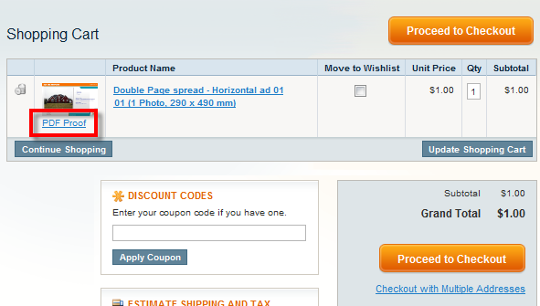

<?xml version="1.0" encoding="UTF-8"?><rss version="2.0"
	xmlns:content="http://purl.org/rss/1.0/modules/content/"
	xmlns:wfw="http://wellformedweb.org/CommentAPI/"
	xmlns:dc="http://purl.org/dc/elements/1.1/"
	xmlns:atom="http://www.w3.org/2005/Atom"
	xmlns:sy="http://purl.org/rss/1.0/modules/syndication/"
	xmlns:slash="http://purl.org/rss/1.0/modules/slash/"
	>

<channel>
	<title>PDF settings &#8211; Magento web-to-print &amp; dynamic imaging</title>
	<atom:link href="http://www.zetaprints.com/magentohelp/tag/pdf-settings/feed/" rel="self" type="application/rss+xml" />
	<link>http://www.zetaprints.com/magentohelp</link>
	<description>Just another WordPress site</description>
	<lastBuildDate>Fri, 07 Jun 2013 06:55:21 +0000</lastBuildDate>
	<language>en-US</language>
	<sy:updatePeriod>hourly</sy:updatePeriod>
	<sy:updateFrequency>1</sy:updateFrequency>
	<generator>https://wordpress.org/?v=4.4.1</generator>
	<item>
		<title>PDF proof</title>
		<link>http://www.zetaprints.com/magentohelp/magento-pdf-proof/</link>
		<pubDate>Tue, 13 Jul 2010 13:13:36 +0000</pubDate>
		<dc:creator><![CDATA[admin]]></dc:creator>
				<category><![CDATA[Web-to-print administration]]></category>
		<category><![CDATA[Download]]></category>
		<category><![CDATA[PDF settings]]></category>

		<guid isPermaLink="false">http://www.zetaprints.com/help/?p=10481</guid>
		<description><![CDATA[PDF proofs can be generated on request before proceeding to the checkout. It is an optional feature available through Magento web-to-print extension. A web-to-print order can be saved prior to completion and a proof PDF is generated for the customer if “create PDF for review with saved orders” option is enabled for that template. The [&#8230;]]]></description>
				<content:encoded><![CDATA[<p>PDF proofs can be generated on request before proceeding to the checkout. It is an optional feature available through Magento web-to-print extension.<span id="more-10481"></span></p>
<p>A web-to-print <a title="Magento web-to-print order management" href="../../../magento-order-management/" target="_self">order</a> can be saved prior to completion and a proof PDF is generated for the customer if “<em>create PDF for review with saved orders</em>” option is enabled for that template. The purpose of the web-to-print proofing file is to give customers an opportunity to download it, share with someone else or review it offline.</p>
<h2>Important: billing</h2>
<p>Enabling PDF proofs makes orders <a title="Magento and API billing" href="../../../../help/magento-and-api-billing/">billable</a> when they are saved for the shopping cart, before the check out. Please, read our <a title="web-to-print billing" href="../../../../help/billing-rules/">billing rules</a> for more info.</p>
<h2>Enable PDF proofs</h2>
<p>PDF proofs can be enabled for any web-to-print template regardless of other file generation settings. Learn how to <a title="Web-to-print PDF prrof for orders" href="../../../../help/saved-orders-with-pdf-proofs/" target="_self">turn this option ON</a> for a <a title="ZetaPrints web-to-print" href="../../../../" target="_self">web-to-print</a> template.</p>
<h2>View PDF proof</h2>
<p>A link to the PDF proof is shown under preview images in a shopping cart. It only shoes if the product has the PDF proof enabled.</p>
<p></p>
<p>Personalize and add this <a title="Magento demo product with PDF proof enabled" href="../../../../magento/index.php/double-page-spread-horizontal-ad-01-1-photo-290-x-490-mm.html" target="_self">demo product</a> to your shopping cart in our <a title="Magento web-to-print Demo store" href="../../../../magento-web-to-print/magento-demo-store/" target="_self">demo store</a> to view the generated PDF proof.</p>
<p><strong>Note.</strong> PDF proofs are generated using the <a title="Web-to-print templates for preview and printing" href="../../../../help/templates-for-preview-and-printing/" target="_self">preview template</a> and retain the <a title="Web-to-print watermarks" href="../../../../help/watermarks/">watermark</a>. The quality of the images is set to 96dpi, all text is converted to curves, native color space is used, no cropmarks, no bleed.</p>
]]></content:encoded>
			</item>
	</channel>
</rss>

<!-- Localized -->